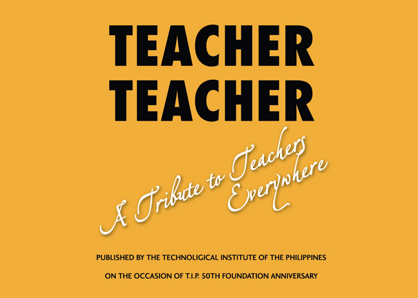
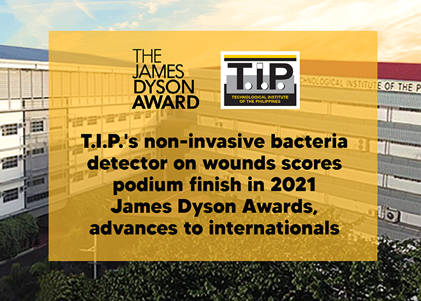
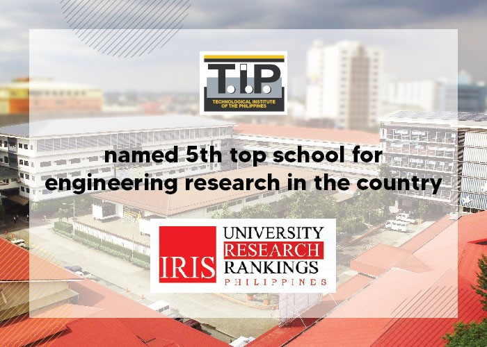

Teacher Teacher, A Tribute To Teachers EverywhereEight years ago, the Technological Institute of the Philippines (T.I.P.) published a book entitled Teacher Teacher as part of its 50th anniversary celebration. The book gave honor and praise, not just to the teachers who had been with T.I.P. since the beginning, but also to all the teachers who are working hard to educate generations and generations of Filipinos, so they too, can have a better future. T.I.P. founders Engr. Demetrio A. Quirino and Dr. Teresita U. Quirino started out as teachers themselves before they acted on their vision of doing more for the Filipino youth by founding an engineering educational institution. Since 1962, T.I.P. has been transforming students into graduates with full competence in their fields of studies and who also possess Filipino values, industry-desired values, and global citizen values. Teachers are the most significant component of any educational institution’s success. The book Teacher Teacher is T.I.P.’s way of giving thanks and showing appreciation for its teachers’ tireless efforts to meet the vision of the T.I.P. founders: to make T.I.P. the leading professional technological institution in the Philippines and to produce graduates who contribute to the welfare of society. With the shift to the new normal, T.I.P. understands that it is not just students who are experiencing challenges but teachers as well. The re-release of the book Teacher Teacher hopes to bring more inspiration to educators to continue giving their best in educating their students so they too can also be the best version of themselves. T.I.P. shares this book with everyone. Please click on this link to access some essays from the book Teacher Teacher, A Tribute to Teachers Everywhere https://online.flippingbook.com/view/926439/ |
 |
T.I.P.'S Non-Invasive Bacteria Detector On Wounds Scores Podium Finish In 2021 James Dyson Awards, Advances To InternationalsThe Technological Institute of the Philippines (T.I.P.) Manila assumed a podium spot in the 2021 James Dyson Awards (JDA) with its non-invasive bacteria detector on wounds, an electrochemical device that identifies microbes found in wounds and other topical cuts through quick gas absorption. Electronics engineering fresh graduates Angelica Moneth Lozano and Shania Xylene Miguel worked on the medical instrument for over a year, competing with 33 more student entries and eventually finishing runner-up in the JDA nationals. "Our prototype gives immediate diagnosis of infectious and decaying wounds, skipping long processes of laboratory sampling which is rather costly and painful," said Lozano. <"We've tested it on diabetic patients at Jose R. Reyes Memorial Medical Center; and for results to be accurate, the device's sensors need to absorb the fumes emitted by the wound from an ideal distance of one to four millimeters only. Bacteria present will be shown through an LCD screen in less than five seconds," she added. The goal, according to Lozano, was to make healthcare accessible to all, especially in a time of crisis. Dr. Rommel Anacan, head of T.I.P. Manila's Math and Physics department, echoed this sentiment – noting that with its latest inventions and breakthroughs, the institution aims to create a "culture of excellence and innovation." T.I.P.'s non-invasive bacteria detector on wounds is now advancing to the international JDA where it will go head-to-head with fellow podium finishers of other countries. The James Dyson Awards is an annual global competition that celebrates the works of the brightest and youngest minds in design engineering. For more information on T.I.P., please visit https:https://www.tip.edu.ph// |
 |
T.I.P. Named 5th Top School For Engineering Research In The Country - IRISThe Technological Institute of the Philippines (T.I.P.) was hailed as the fifth top school for engineering research in the 2021 IRIS (Institutes for Research, Innovation, and Scholarship) Philippine University Research Rankings. IRIS also cited T.I.P. as one of the fastest growing universities in the sciences category, jumping from 37th to 28th in the last five years. T.I.P. President Dr. Elizabeth Quirino-Lahoz welcomed the results as "good news," saying "affirmations such as this one inspire us to further contribute to that critical mass in research and innovation." The IRIS rankings provide a stepping stone for local HEIs aspiring to earn international standing. Dr. Carlos Primo David, who presented the list, stressed the importance of tracking university research performance "as these institutions are the primary seedbeds for knowledge creation." He also noted that "there's a good correlation between a vibrant research culture and high quality instructions at the tertiary level." IRIS is a private educational organization that seeks to create pathways for collaboration among Filipino researchers, educators, and innovators in science, technology, engineering, mathematics, and agro-fisheries. - For more information on T.I.P., please visit https:https://www.tip.edu.ph// |
 |